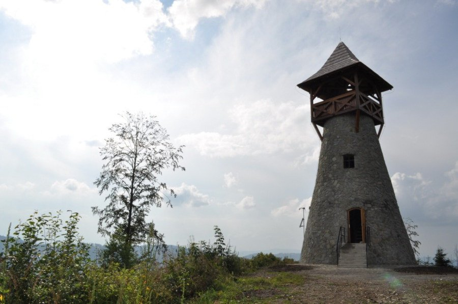
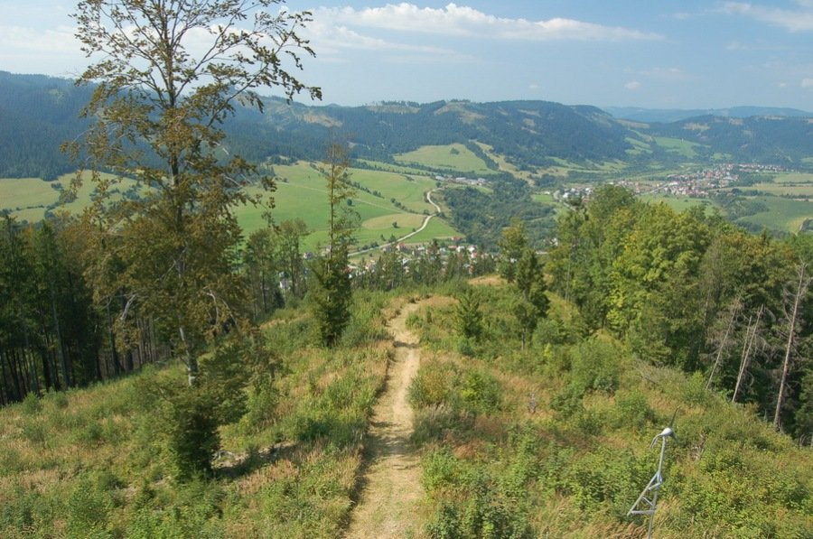
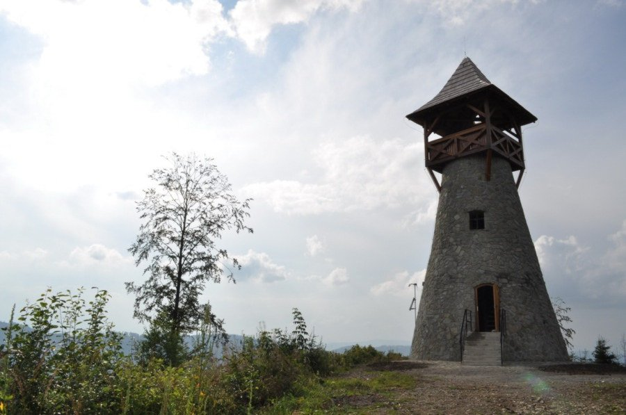
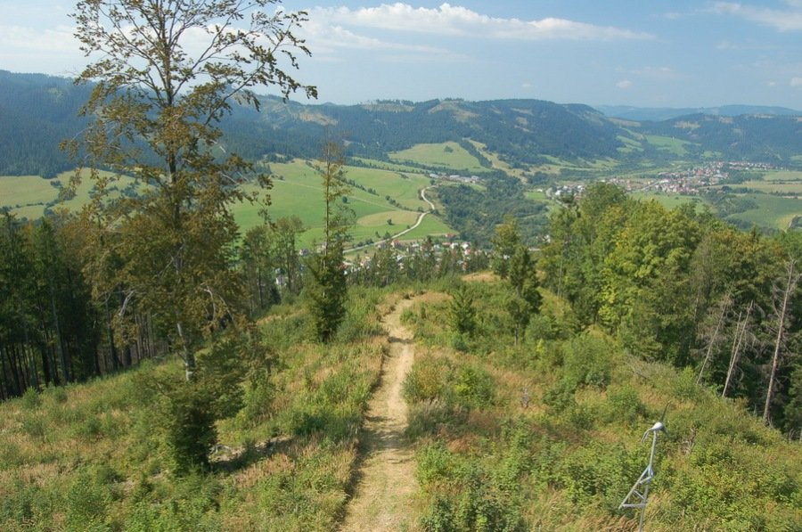
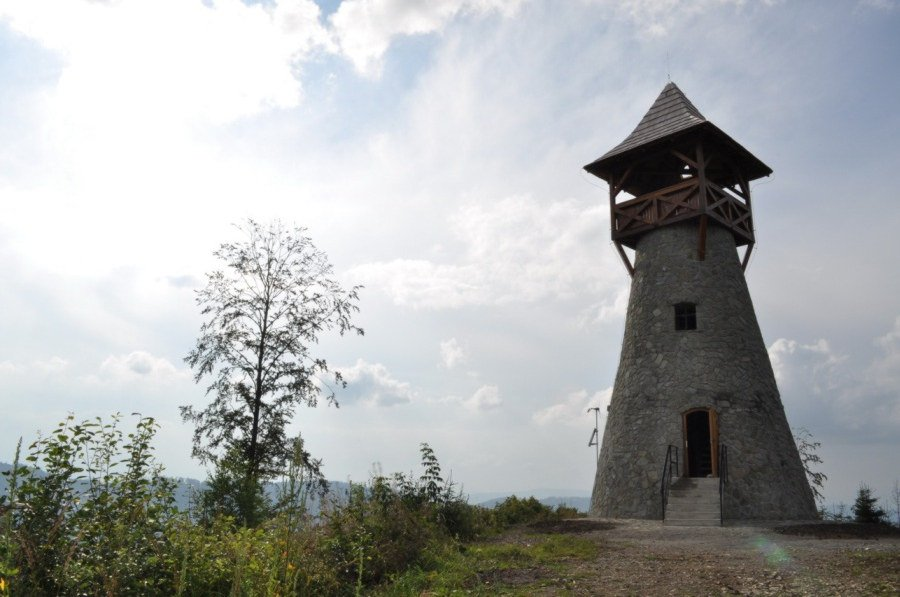
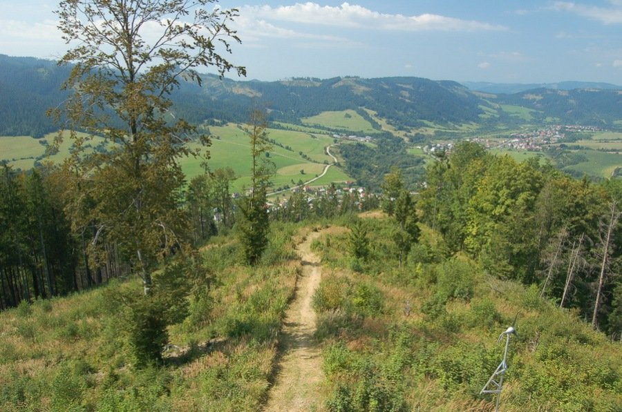

Galéria
  
 
Rozhľadňa na vrchu Bobovec pri Starej Bystrici ponúka krásne výhľady na Kysuckú dolinu a Malú Fatru. Postavená bola Obcou Stará Bystrica v rokoch 2010–2011. Bobovec avšak nie je najvyšším vrchom Starej Bystrice. Ide však o výrazný strmý vrch nad centrom obce, dobre viditeľný z hlavných dopravných komunikácií, ako aj od Slovenského orloja z Rínku sv. Michala, odkiaľ k rozhľadni vedie aj značkovaný žltý turistický chodník. Rozhľadňa na Bobovci leží v nadmorskej výške 720 m na hranici obcí Stará Bystrica a Radôstka. Momentálne je táto rozhľadňa zatvorená z dôvodu rekonštrukcie.
 
041/43 95 122
starabystrica@starabystrica.sk
Zdroj: https://www.starabystrica.sk https://www.google.com/maps